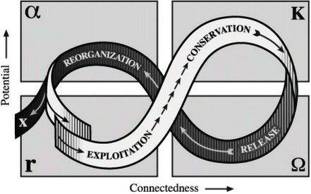

4.1 Marginality in Ecology
The term marginality has become a buzzword across various disciplines and contexts (Cullen and Pretes 2000). Marginality can only be properly defined in a specific reference context. In social systems, marginalized people are often defined as subgroups that differ from the core or mainstream. The core group in this respect is the reference group that the outlier subgroups are marginal to. In ecological systems the designation of any of its components as marginalized is a more challenging exercise. This is because ecosystems consist of manifold interdependent components that are under the influence of a variety of biophysical factors.
In ecology marginality has been applied to describe phenomena that occur at biophysical limits of any kind. These may be geophysical boundaries, environmental thresholds, or habitats that are not well suited for particular species or populations (Odum and Barrett 1971; Cassel-Ginz et al. 1997; Leimgruber 2004). Since the diversity of nature provides a great variety of conditions, margins and marginal conditions are innumerable. Marginal areas may be environments that pose extreme challenges to the survival of certain species such as deserts, high altitude areas, ephemeral water bodies, or sites with heavy metal soils. Stochastic dynamics or disturbances such as volcanic eruptions, floods, or droughts also create temporary marginal conditions in ecological terms. The ‘limits’ of ecosystems in most cases merge into gradients rather than forming sharp boundaries, creating ‘ecotones,’ which are zones of transition between adjacent ecosystems (Holland 1988) where distinctions are blurred (Odum and Barrett 1971).
To comprehensively describe marginality with respect to an ecosystem requires the analysis of each of its components and their interactions. Each species has optimal conditions under which it can best survive and reproduce. The most extreme conditions would be lethal to a species, while less extreme conditions would prevent or limit growth and development and thus be considered marginal (Begon et al. 2006). For example, tree growth is determined by different factors such as temperature, soil conditions, humidity, etc. To determine whether marginality exists in the context of a forest requires an evaluation of the conditions of individual tree species. Changes in the status of one species affect the status of other species (positive/negative feedback). For instance, when resources are shared between competing species the superior competitors profit at the cost of inferior ones (Araujo and Pearson 2005; Soberon 2007).
At the species level, Liebig’s law of the minimum states that the scarcest required resource determines the overall suitability of living conditions in a given area. With respect to the occurrence and abundance of plant or animal species, population growth and size are limited by the availability of the scarcest required resource or ‘limiting factor.’ Therefore it makes sense to describe marginalization in relation to the carrying capacity of the ecosystem, which is the maximum population size of a species that can be sustained indefinitely in a given area. In addition, the carrying capacity for one species is strongly influenced by the presence and relative abundance of other species that compete for the same resources. For example, nutrient availability limits the growth and size of populations of two species of phytoplankton in a pond. The population size of either species will depend on both nutrient availability and the ability of each competing species to procure these nutrients. If one species can access the scarcest nutrient more proficiently it will out-compete the other species in the long run if conditions and nutrient availability are constant over space and time (provided that population growth of the better competitor does not change with increases in population size, i.e., their increased abundance does not increase mortality via greater incidence of disease or predation rate). Therefore a species can be marginalized by the presence of a competing species despite the overall availability of required resources in an ecosystem.
Ecosystems can also be classified by the limiting biophysical factors at different hierarchical levels. For instance, edaphic conditions are more relevant at fine scales, while climatic and orographic factors are more relevant at broader scales (Pearson and Dawson 2003). A translation of this relationship directly to social systems would describe social marginalization as a result of overexploitation of a system’s resources, often due to either high human population density or else decreased resource availability. Hence a relevant way of equating the concept of ecosystems to social marginality is that they are analogous to social systems in which marginality occurs when certain groups have only limited access to resources.
A direct link between marginality in ecological and social systems can be made when considering the concept of biological value and life regulation in living systems (Damasio 2010). The primitive of biological value (Damasio 2010, 2011) is the physiological state of living tissue within a homeostatic range that is necessary for normal function (i.e., health). Extremes of homeostatic ranges have low biological value to them, whereas more central conditions along homeostatic ranges have higher biological values. Thereby biological value is directly linked to need, and need is linked to life. The productive capacity of organisms can be reached in healthy organisms and environments, whereas it will always be underperforming in marginal environments with low biological value.
The propensity of humans to attach values to virtually everything around them relative to their desired living conditions can be perceived as a process which aims at achieving ideal homeostatic conditions. Humans formulate values that regulate the processes (economic and social) within their homeostatic range and thereby contribute to their well-being. Staying alive requires processes of transforming nutrients into energy, disposal of waste, and making use of energy for biological processes under particular biophysical conditions. Departures from homeostatic ranges are detected by the brain, which can stimulate corrective actions. The process of cognition (in simple organisms such as earthworms) and consciousness (in more complex organisms such as humans) is used to monitor and detect whether the body is operating within this range or else in danger—within or outside the homeostatic range (Parvizi and Damasio 2001). A situation where an organism is in danger due to homeostatic imbalance can be conceived as being analogous to organisms living in marginal conditions.
4.2 Socio-ecological Systems and Marginality
Evidently humans have decoupled themselves from purely physiological and competition-related ecological limitations due to technological developments that prop broad adaptive strategies. As a result humans are able to survive in areas that are otherwise unsuitable for them from an ecological point of view. This may, however, put populations that live close to (or beyond) the margins of ecological suitability at risk and make them dependent on inputs from external sources. Extreme examples are human settlements under completely hostile conditions such as polar or space stations that depend entirely on external inputs and modern technologies.
A couple of assumptions can be made regarding how ecological factors may determine social marginality and how boundaries in ecological marginality are similar to those in social marginality. We assume that marginalized people often lack access to resources due to unfavorable (geographical) location or generally restrictive local biophysical conditions (Gatzweiler et al. 2011). For instance, remoteness in the sense of living far away from economic centers may result in social marginality by limiting access to work, education, and health care (Leimgruber 2004). From an anthropocentric point of view, ecological systems provide goods and services that their inhabitants use to ensure their well-being. Constraints in resource procurement determine the extent of marginalization. Examples are farming in isolated areas, in areas with limited access to water, or where soils or other conditions are of limited suitability. Complementarily, people may become marginalized as the result of ecological degradation such as desertification, acidification, or salinization of soils, and air or water pollution, etc. In these cases marginalization is the result of a gradual process.
Assuming that unfavorable ecological conditions contribute to the general marginality of a human settlement, there may also be privileged individuals who are able to increase their resilience and adaptive capabilities at the expense of less privileged individuals or of common resources. In environments with poor or depleted biophysical assets, forms of social exclusion often manifest (Winchester and White 1988; Gatzweiler et al. 2011). These considerations suggest that it is appropriate to enlarge the scope of analysis over a broader realm in order to understand ecological marginality and the ‘socio-ecological systems’ (SES) concept.
It is generally acknowledged that understanding complex phenomena requires insights from multiple scientific disciplines, but not until the 1970s in the context of greater awareness of the global environmental crisis did an appropriate conceptual framework for considering ‘mingled phenomena’ emerge (Vayda and McCay 1975). It was during this period that the concepts such as ‘lifescape,’ ‘livelihood,’ ‘coupled human-environmental,’ and ‘human-natural systems’ were first proposed (Howorth 1999; Marschke and Berkes 2006). Recently SES has emerged as a concept integrating human-natural interrelationships that is used to harmonize social development and conservation goals. By asserting that many complex phenomena include both social and ecological systems simultaneously and inseparably (Gallopin 2006), and therefore any demarcation is artificial and arbitrary (Folke 2006), the application of crosscutting and integrated approaches such as the concept of marginality are advocated for the consideration of complex issues.
Based on this concept it is worth identifying situations where social marginalization occurs due to ecological variables or ecosystem settings. People can be marginalized due to environmental factors that inhibit their well-being. These factors generally act on distinct spatial and temporal scales due to variation in the physical and chemical characteristics of ecosystems (degraded soils, salinity, toxic pollutants, etc.). All of these factors may be used to describe the degree of marginality to which the inhabitants of an ecosystem are subject. For example, many tropical areas of Africa are affected by sleeping sickness/animal trypanosomiasis, which is transmitted by tsetse flies, making them marginal areas to inhabit and raise cattle: pastoralists who only have access to these areas are marginalized by environmental factors.
People can be marginalized by limited access to natural resources due to inherent variability of the amount and quality of the natural resources in a particular ecosystem (Landres et al. 1999). Constraints on an ecosystem that limit the amount of resources available to residents after having passed a physiological threshold (e.g., due to high human population density), can result in the marginalization of the inhabitants. Resource depletion can also occur due to the degradation of ecosystems by overexploitation (e.g., soil erosion, deforestation, extirpation of wildlife, etc.) or other means and lead to degradation-induced marginality.
Marginalization also occurs in SES through competition. This may occur directly, as when one actor takes land or resources from another, or through indirect mechanisms such as the appropriation of land by central governments (Cotula et al. 2009). Marginalization in a SES may occur consensually, for example the resettlement of populations for the construction of hydroelectric dams that contribute to the general well-being in a society.
The cases above reveal how marginality can be complex and often deal with SES that are subject to risk and uncertainty (Leach et al. 2007). Moreover the drivers of marginalization respond to changing socio-ecological factors and are often uncontrollable by the affected people, as the inherent causal mechanisms emerge on spatial, temporal, or administrative scales that the affected people have limited control over. Strengthening the resilience and adaptability of SES, however, helps to prevent the marginalization of its inhabitants.
4.3 Addressing Marginality in Socio-ecological Systems via Resilience and Adaptability
It has been found that human communities, particularly when overpopulated, often overuse local natural resources, thus aggravating poverty through natural resource depletion (Dasgupta and Mäler 1994). This feedback loop contributes actively to the marginalization of the poor by limiting their resource options (UNCCD 2003). This has been documented in the case of West African savannah agricultural systems that are constrained by limited soil productivity and highly variable precipitation patterns (Sanchez 2002; Sanchez et al. 2002; Challinor et al. 2007), in the case of slash-and-burn agriculture in rainforests at historically high population densities leading to deforestation and the exhaustion of soils (Palm et al. 2005), and in the case of the migration of Andean farmers to less productive, higher altitude areas due to reduced local availability of agricultural land at more favorable altitudes (Mayer 2002).
The difficulties of escaping such poverty/natural-resource-depletion feedback loops are aggravated by global drivers such as human population growth, habitat degradation and destruction, climate change, the global economic crisis, and their combined impacts. In this context the sustainable performance of a SES requires a dynamic configuration that can adjust to progressive or sudden changes (Adger 2006). Therefore considering marginality in SES requires taking into account change and disturbance as the principal constraints that can be considered using the concepts of resilience and adaptability (Dilley and Boudreau 2001; Vogel et al. 2007).
Resilience was originally coined in ecology to describe the capacity of ecosystems to recover functionality after shocks (Holling 1973), and may be used to refer to the capacity for renewal and reorganization of a SES (Gunderson and Holling 2002; Berkes et al. 2003). It is conceived of as a system’s capacity to maintain its identity, structure and function in response to a disturbance event (Walker and Meyers 2004). Adaptability is the capacity to adjust to change (Smit and Wandel 2006) or in other words the ability to remain in a stable configuration despite changes to internal or external factors over time (Denevan 1983; Andresen and Gronau 2005).
Despite coming from ecology, the concepts of resilience and adaptability have started to be used in interdisciplinary contexts (Janssen and Ostrom 2006; Vogel 2006) due to their utility for portraying the drivers of sustainability and long-term functionality of complex systems (Callo-Concha and Ewert 2011). In this framework a marginal SES is a system with limited or no resilience. Marginal systems are vulnerable in the sense that their stability is menaced by events that push them towards a threshold after which the system must either reach a new homeostasis under different conditions or else become unstable.
The adaptive cycle (Fig. 4.1) is a conceptual tool that portrays the successive stages of systems in response to changing conditions (Gunderson and Holling 2002). In the case of poverty and natural-resource-depletion feedback loops, the adaptive cycle can help to identify ‘poverty traps’ or situations where system diversity, connectivity, and resilience are reduced to the extent that system performance cannot be regained or is destabilizing. Gunderson and Holling (2002) provide examples of a productive savannah that became degraded due to drought and overgrazing fueled by economic incentives for maintaining high stocking densities. Other examples of system collapse are societies traumatized by civil war, where social and cultural cohesion and adaptive abilities have been lost, preventing the rebuilding of society (Volkan 2000). In the case of ‘rigidity traps,’ decision circuits are highly interconnected, reinforcing themselves and making the system inflexible (Gunderson and Holling 2002). A good example is an old forest where larger, well-established trees inhibit the growth of saplings, impeding the renewal of the forest as a whole and increasing vulnerability to disturbances such as wildfire (Carpenter and Brock 2008). A corresponding social example would be the case of authoritarian governments where vertical decision-making structures impede innovation and adaptation, that tend to collapse when the overall settings such as democratic values become gradually hegemonic.

Fig. 4.1
The adaptive cycle: successive phases of response of a complex system to changing conditions (Gunderson and Holling 2002, 34; Reproduced by permission of Island Press, Washington, DC)
Preventing the marginalization of a human community by increasing its resilience and adaptive capacity cannot be achieved by concentrating on a single component without considering other interlinked components of the SES. Contrarily it must fulfill various complementary and successive goals (e.g., guaranteeing food security, creating income generating opportunities, and maintaining ecosystem services)—goals which aim at improving the conditions for living systems, either social or ecological. In consequence any intervention to prevent and eventually reduce marginality should consider the functionality of the components of the SES and the involved processes. Moreover these efforts need to acknowledge the complexity of SES and therefore adopt systemic principles that allow the identification and characterization of the components, and consideration of the context, boundaries, connectedness, feedback, inflows and outflows as proposed by the ‘Ecosystem Approach’ (Waltner-Toews et al. 2008), and further elaborated by Gatzweiler et al. (2011) in the context of social marginality.
4.4 Outlook
We have discussed basic biological, ecological, and social dimensions of marginality from a systems perspective. We support the assertion that understanding human-environmental interrelationships demands a broader conceptualization such as the SES concept. Furthermore, marginalization appears difficult to reverse once complex systems have produced states which are far outside of normal homeostatic ranges. One way to combat marginalization is to increase the resilience and adaptability of the SES. This can be done (e.g., by valuation, feedback, and monitoring), however, multiple needs must be considered at the same time that refer to the ideal condition for human and non-human life to prevail, mainly: food security, income generation, energy provision, and the maintenance of diversity. Research on marginality in the context of interlinked, complex, and dynamic socio-ecological systems demand paradigm shifts in scientific disciplines that are beginning to merge. New research networks and funding policies should address marginality by promoting interdisciplinary, systems-based, and practical (problem-solving) approaches to provide better decision-making arguments.
References
Adger W (2006) Vulnerability. Glob Environ Chang 16(3):268–281CrossRef
Andresen K, Gronau N (2005) An approach to increase adaptability in ERP systems. In: Khosrow-Pour M (ed) Managing modern organizations with information technology: proceedings of the 2005 Information Resources Management Association international conference, San Diego, Idea Group Publishing, Herschey, 15–16 May 2005, pp 883–885
Araújo MB, Pearson RG (2005) Equilibrium of species’ distributions with climate. Ecography 28:693–695CrossRef
Begon M, Townsend C, Harper J (2006) Ecology: from individuals to ecosystems, 4th edn. Blackwell Publishing, Malden
Berkes VF, Colding J, Folke C (2003) Navigating social-ecological systems. Cambridge University Press, New York
Callo-Concha D, Ewert F (2011) Assessing multifunctional agroforestry systems applying the Resilience/Vulnerability and Adaptability (RVA) approach. In: Becker M, Kreye C, Ripken C, Tielkes E (eds) Tropentag 2011, book of abstracts, international research on food security, natural resource management and rural development, Bonn, 5–7 October 2011. DITSL GmbH, Witzenhausen. http://www.tropentag.de/2011/proceedings/ proceedings.pdf. Accessed 25 Jan 2013
Carpenter SR, Brock WA (2008) Adaptive capacity and traps. Ecol Soc 13(2):40
Cassel-Gintz MA, Lüdeke MKB, Petschel-Held G, Reusswig F, Plöchl M, Lammel G, Schellnhuber HJ (1997) Fuzzy logic based global assessment of the marginality of agricultural land use. Clim Res 8(2):135–150CrossRef
Challinor A, Wheeler T, Garforth C, Craufurd P, Kassam A (2007) Assessing the vulnerability of food crop systems in Africa to climate change. Clim Chang 83(3):381–399CrossRef
Cotula L, Vermeulen S, Leonard R, Keeley J (2009) Land grab or development opportunities: agricultural investment and international land deals in Africa. International Institute for Environment and Development, Food and Agriculture Organization of the United Nations and International Fund for Agricultural Development, London/Rome
Cullen BT, Pretes M (2000) The meaning of marginality: interpretations and perceptions in social science. Soc Sci J 37(2):215–229CrossRef
Damasio A (2010) Self comes to mind. Constructing the conscious brain. Pantheon Books, New York
Damasio A (2011) Neural basis of emotions. Scholarpedia 6(3):1804CrossRef
Dasgupta P, Mäler KG (1994) Poverty, institutions and the environment-resource base. World bank environment paper 9, World Bank, Washington, DC
Denevan WM (1983) Adaptation, variation and cultural geography. Prof Geogr 35(4):399–406CrossRef
Dilley M, Budreau T (2001) Coming to terms with vulnerability: a critique of the food security definition. Food Policy 26(3):229–247CrossRef
Folke C (2006) Resilience: the emergence of a perspective for social–ecological systems analyses. Glob Environ Chang 16(3):253–267CrossRef
Gallopin GC (2006) Linkages between vulnerability, resilience, and adaptive capacity. Glob Environ Chang 16:293–303CrossRef
Gatzweiler F, Baumüller H, von Braun J, Ladenburger C (2011) Marginality: addressing the root causes of extreme poverty. ZEF working paper no 77, Center for Development Research, University of Bonn, Bonn
Gunderson LH, Holling CS (2002) Panarchy: understanding transformations in human and natural systems. Island Press, Washington, DC
Holland MM (1988) SCOPE/MAB technical consultations on landscape boundaries report of a SCOPE/MAB workshop on ecotones. Biol Int Spec Issue 17:47–106
Holling C (1973) Resilience and stability of ecological systems. Annu Rev Ecol Syst 4:1–23CrossRef
Howorth C (1999) Rebuilding the local landscape: environmental management in Burkina Faso. Ashgate Publishing, Farnham
Janssen MA, Ostrom E (2006) Resilience, vulnerability, and adaptation: a cross-cutting theme of the international human dimensions programme on global environmental change. Glob Environ Chang 16(3):237–239CrossRef
Landres P, Morgan P, Swanson F (1999) Overview of the use of natural variability concepts in managing ecological systems. Ecol Appl 9(4):1179–1188
Leach M, Scoones I, Stirling A (2007) Pathways to sustainability: an overview of the STEP centre approach. STEPS approach paper. STEPS Centre, Brighton
Leimgruber W (2004) Between global and local: marginality and marginal regions in the context of globalization and deregulation. Ashgate Publishing, Farnham
Marschke MJ, Berkes F (2006) Exploring strategies that build livelihood resilience: a case from Cambodia. Ecol Soc 11(1):42–58
Mayer E (2002) The articulated peasant: household economies in the Andes. Westview Press, Boulder
Odum E, Barrett G (1971) Fundamentals of ecology. Thomson Brooks, Cole
Palm C, Vosti S, Sanchez P, Ericksen P (eds) (2005) Slash-and-burn agriculture: the search for alternatives. Columbia University Press, New York
Parvizi J, Damasia A (2001) Consciousness and the brainstem. Cognition 79:135–159CrossRef
Pearson RG, Dawson TP (2003) Predicting the impacts of climate change on the distribution of species: are bioclimate envelope models useful? Glob Ecol Biogeogr 12:361–371CrossRef
Sanchez P (2002) Soil fertility and hunger in Africa. Science 295:2019–2020CrossRef
Sanchez P, Jama B, Niang A, Palm CA (2002) Soil fertility, small-farm intensification and the environment in Africa. In: Lee DR, Barett CB (eds) Tradeoffs or synergies? agricultural intensification, economic development and the environment. Commonwealth Agricultural Bureau International, New York, pp 325–344
Smit B, Wandel J (2006) Adaptation, adaptive capacity and vulnerability. Glob Environ Chang 16(3):282–292CrossRef
Soberón J (2007) Grinnellian and Eltonian niches and geographic distributions of species. Ecol Lett 10:1115–1123CrossRef
UNCCD (2003) Confronting land degradation and poverty through enhanced UNCCD implementation. Discussion paper prepared by the global mechanism of UNCCD for the sub-regional partnership building forum for the central Asian republics, Tashkent, Uzbekistan. United Nations Commission to Combat Desertification, Bonn
Vayda AP, McCay BJ (1975) New directions in ecology and ecological anthropology. Annu Rev Anthropol 4(1):293–306CrossRef
Vogel C (2006) Foreword: resilience, vulnerability and adaptation: a cross-cutting theme of the international human dimensions programme on global environmental change. Glob Environ Chang 16(3):235–236CrossRef
Vogel C, Moser SC, Kasperson RE, Dabelko GD (2007) Linking vulnerability, adaptation, and resilience science to practice: pathways, players, and partnerships. Glob Environ Chang 17(3–4):349–364
Volkan VD (2000) Traumatized societies and psychological care: Expanding the concept of preventive medicine. Mind Hum Interact 11:177–194
Walker B, Meyers JA (2004) Thresholds in ecological and social–ecological systems: a developing database. Ecol Soc 9(2):3–19
Waltner-Toews D, Kay JJ, Lister NM (2008) The ecosystem approach: complexity, uncertainty and managing for sustainability. Columbia University Press, New York
Winchester HPM, White PE (1988) The location of marginalised groups in the inner city. Environ Plann D Soc Sp 6(1):37–54CrossRef